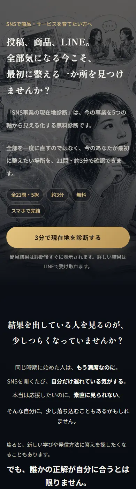
診断案内LP
shindan-lp.html
いちばん最初に出会うページ。共感 → 再定義 → 診断の説明、の順に読ませます。
- ここだけは規約類（特商法・プライバシーポリシーなど）をフッターに出します
- スクロールでふわっと出る演出が入っています
- ここから先、診断が終わるまでLINEには一切つながりません
内部用・非公開
SNS事業の現在地診断 ／ SNS事業の一本線 5DAY
このページは、診断と5日間チャレンジの全画面と裏側の仕組みをまとめたものです。
とーるとAIチーム（Codex・あかり）が見るためのもので、参加者には出しません。
検索には出ません（noindex）。ファネルのどこからもリンクしていません。
shindan-lp.htmlはじめて出会うページshindan-intro.htmlひと呼吸おいて設問へshindan.html選ぶと自動で次へshindan.html#/resultスコアと最初に整える場所＋引き継ぎ（プロライン）シナリオ①が始まるrestore.html?uid=uidと診断結果を結ぶindex.html#/handoverここから企画だと告げるlp.html読んで、宣言して参加index.html1日ひとつずつindex.html#/day5-done一本線シートと次の一歩21問・約3分。ここでの目的は「現在地を数字で見せること」と、その結果をLINEへ持っていける状態にすることです。

shindan-lp.html
いちばん最初に出会うページ。共感 → 再定義 → 診断の説明、の順に読ませます。
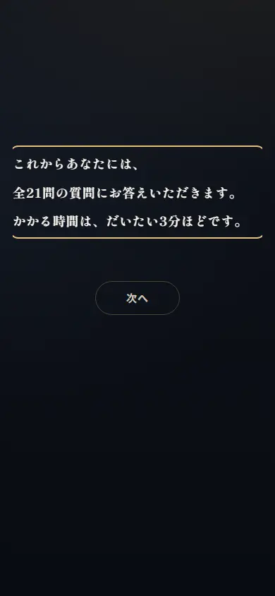
shindan-intro.html
設問に入る前のひと呼吸。何問あるか、何分かかるか、途中で閉じても大丈夫か、を伝えます。
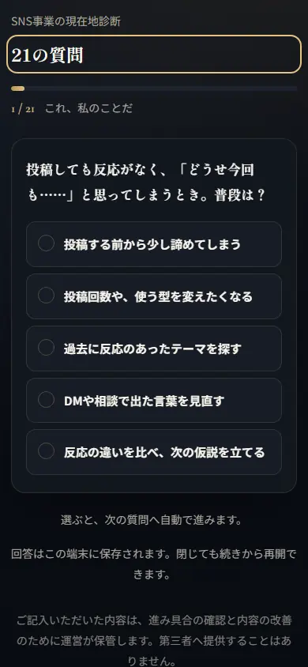
shindan.html
5段階から選ぶと、自動で次の設問へ進みます。進むボタンは置いていません。
?dev=1 を付けたときだけ設問へ入れます（校正用）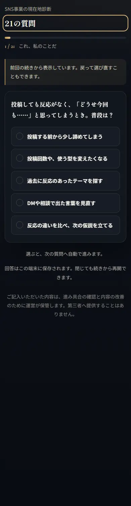
shindan.html#/result
総合スコア、5軸のかたち、いちばん低い軸、そして「LINEで詳しい結果を受け取る」。
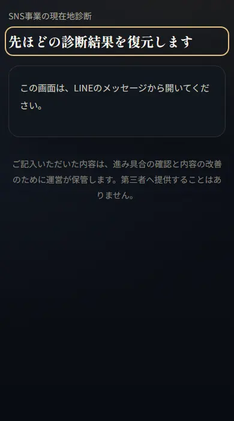
restore.html
この画面はLINEのメッセージから開くもの。uidが無いときは、その旨だけ出します。
?uid=… が付き、uidだけで結果を引き当てます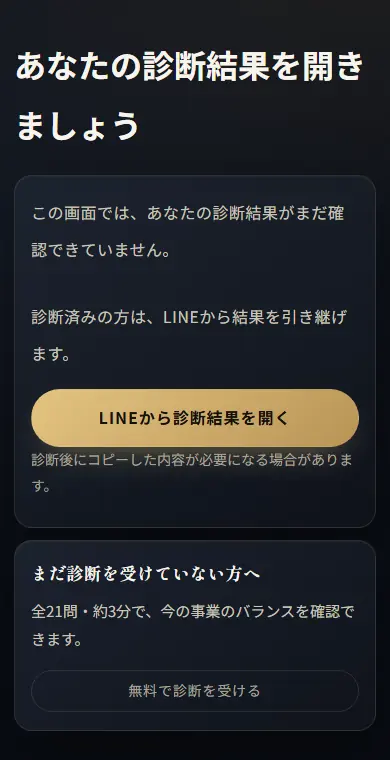
index.html
端末の保存が消えた人・別の端末の人が5日間アプリを開いたとき。行き止まりにしません。
ここが2026-09-11に作り直した部分です。診断の続きに見えないよう、区切りを入れて、参加を「宣言」にしました。
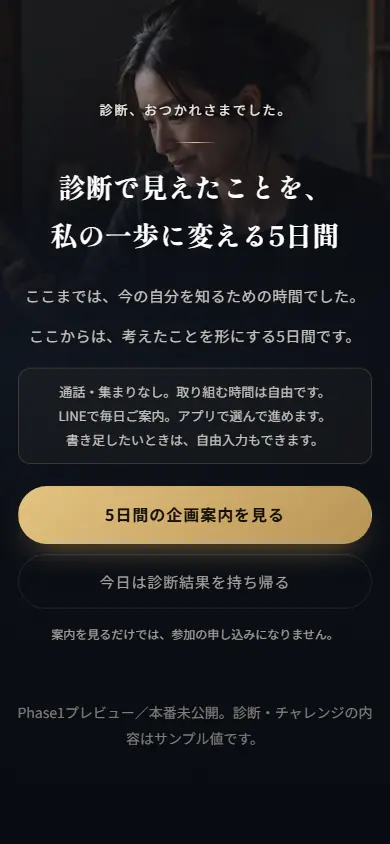
index.html#/handover
「ここまでが現在地を知る時間。ここからは5日間の企画」と告げるだけの画面。説明はしません。
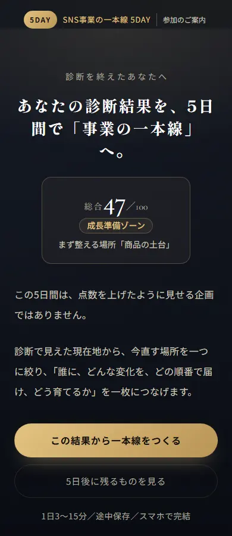
lp.html
診断結果を引き継いで表示します。いちばん上に企画の帯を置いて、ページの性格が変わったことを示します。
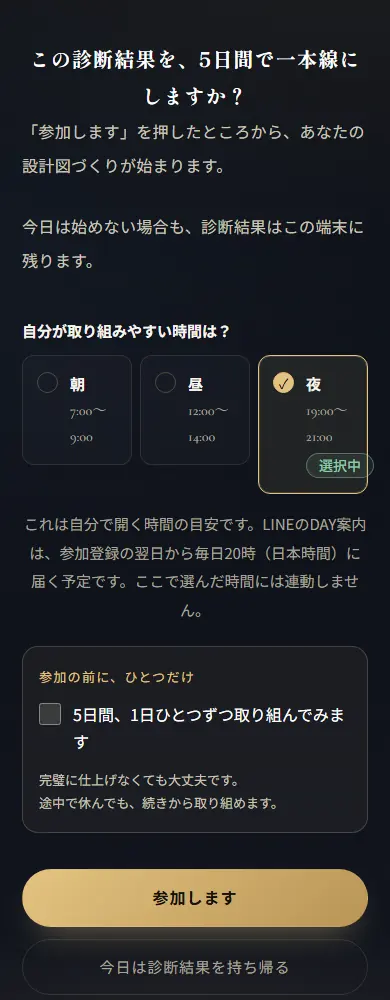
lp.html（最下部）
取り組む時間を選び、約束にチェックしてから「参加します」。押すだけにしていません。
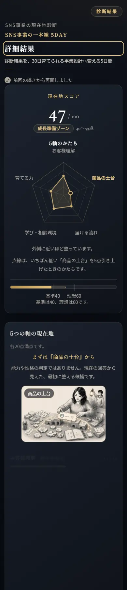
index.html#/result
5日間アプリ側の結果画面。レーダー、5軸、改善仮説、そして「強みを活かしきれていますか？」。
やることは2つだけ。今直す場所を一つ決め、今週は触らないものを一つ選ぶ。
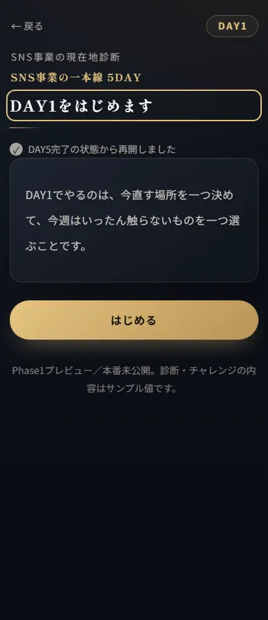
#/day1-intro
今日やることの予告。3〜4分で終わることを伝えます。
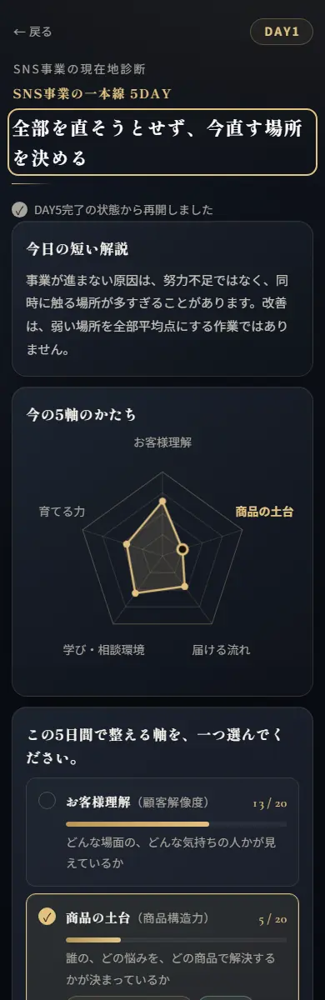
#/day1-focus
診断でいちばん低かった軸が最初から選ばれています。本人が選び直せます。
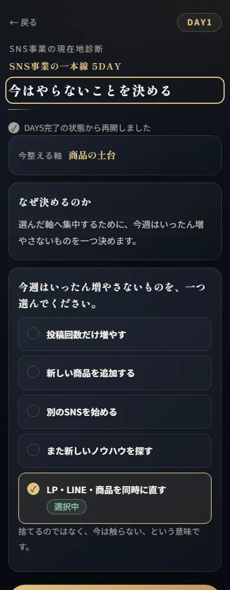
#/day1-pause
増やす前に、置く。同時に直そうとして止まるのを防ぎます。
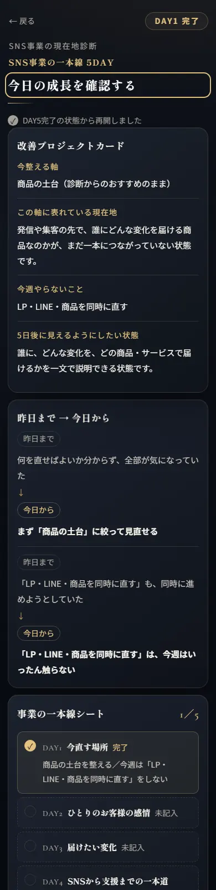
#/day1-done
決めたことの確認、ここまで／ここから、一本線シートの進み具合。
属性ではなく、ひとりの場面と感情を言葉にします。
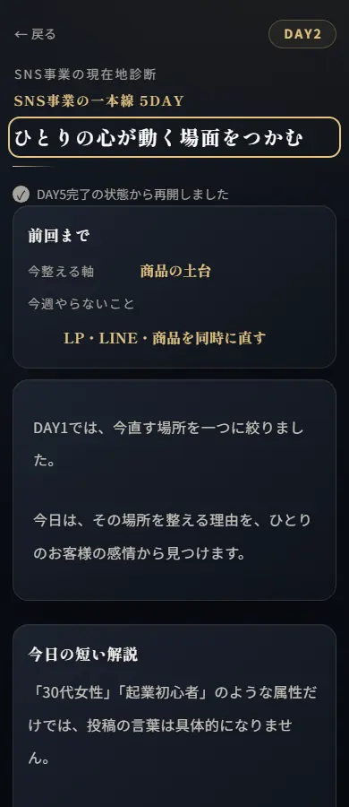
#/day2-intro
前回まで（決めた軸）を見せてから始めます。
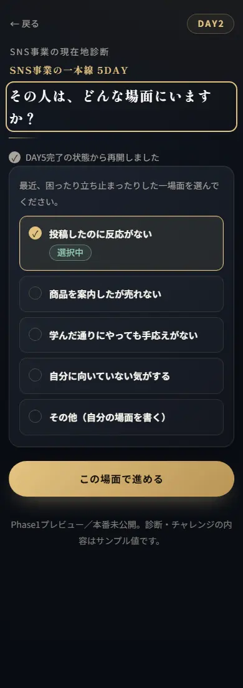
#/day2-scene
選択肢から選びます。当てはまらなければ自分の言葉で書けます。
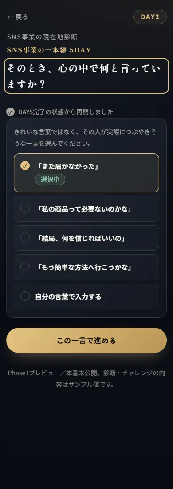
#/day2-voice
その場面で、お客様が口に出す言葉。
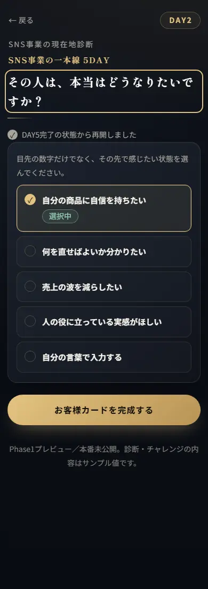
#/day2-hope
望んでいる状態。DAY3の「届ける変化」につながります。
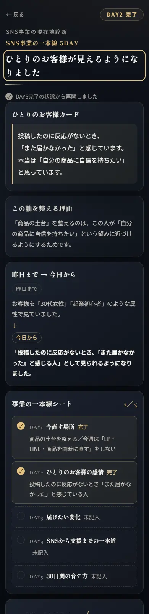
#/day2-done
ひとりのお客様が一枚にまとまります。
今いる場所から望む状態へ。その間に自分の商品がどんな役割を持つのかを一文にします。
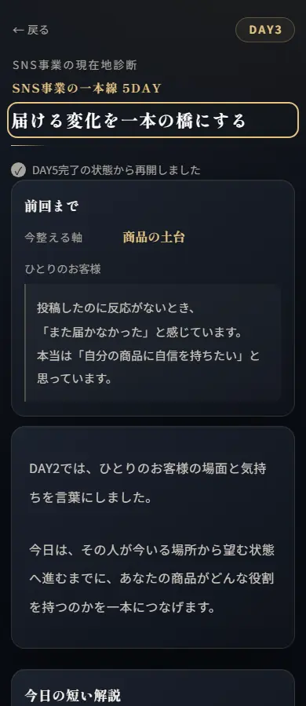
#/day3-intro
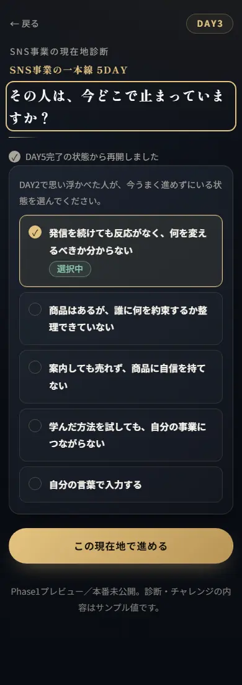
#/day3-current
現在地・壁・最初の変化・行き先・商品の役割を順に選びます。
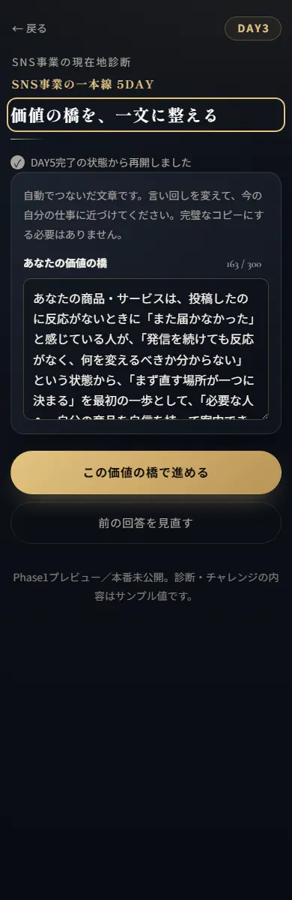
#/day3-bridge
選んだ5つから文章を自動で組み立てます。本人が直せます。
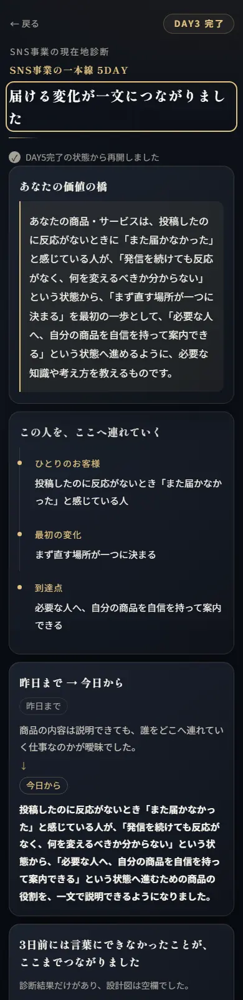
#/day3-done
知ってもらう入口から、必要な支援まで。お客様が迷わない順番につなぎます。
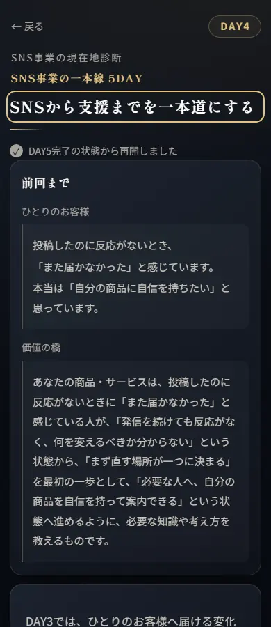
#/day4-intro
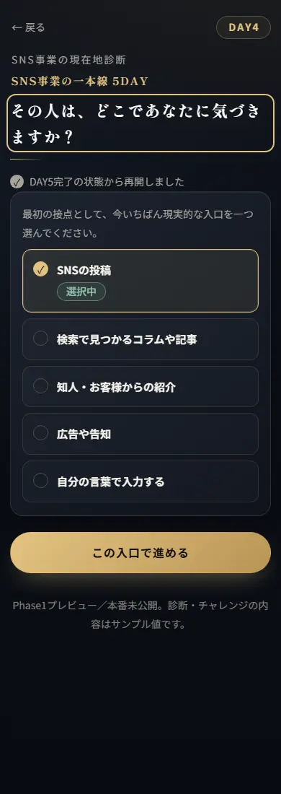
#/day4-entry
入口・関わり・小さな行動・支援を選びます。
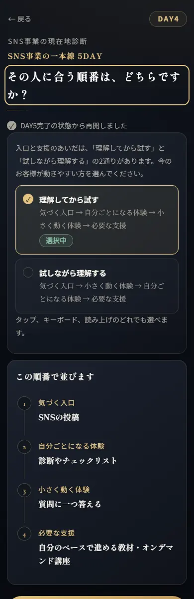
#/day4-order
真ん中2つをどちらの順で置くか。
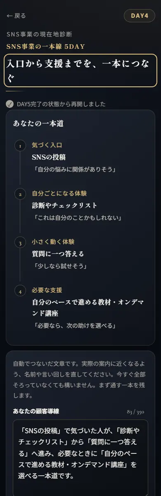
#/day4-journey
4地点が一本道の図になります。
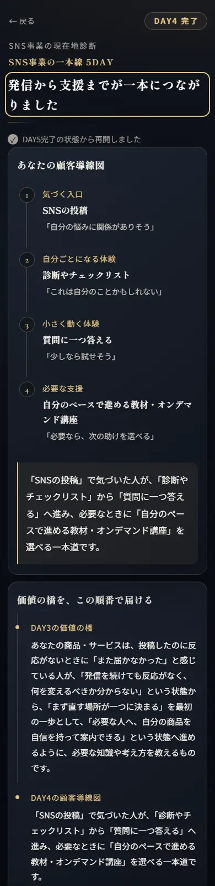
#/day4-done
一度で完成させない。何を試し、どの反応を見て、いつ振り返るかを決めます。
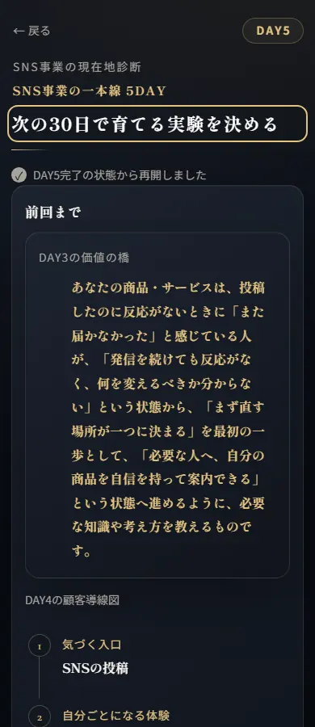
#/day5-intro
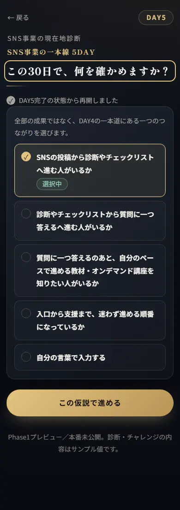
#/day5-hypothesis
仮説・週の行動・見る数字を選びます。
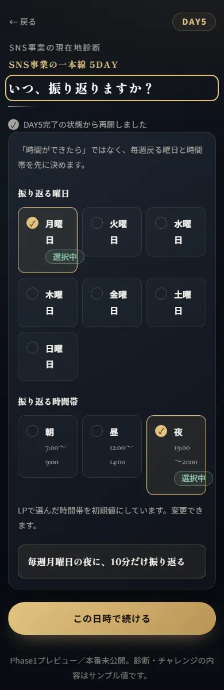
#/day5-schedule
いつ振り返るか、どこを調整するか。
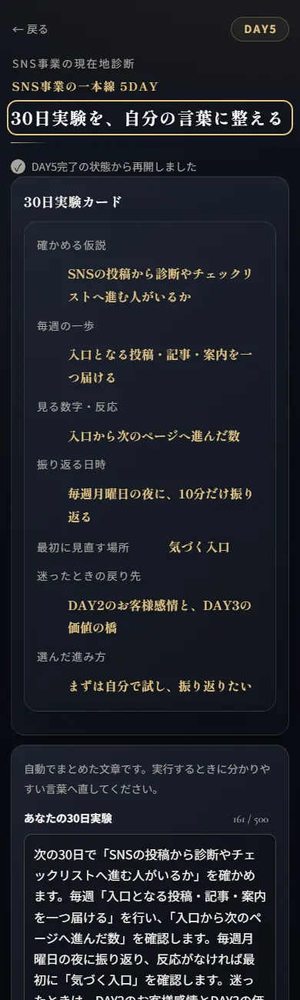
#/day5-experiment
決めたことが1枚のカードになります。
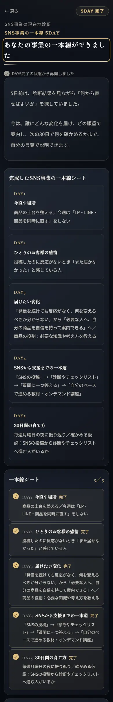
#/day5-done
5日間で作ったものが1枚につながります。ここに次の一歩（オファー）が出ます。
?dev=1 のときは通ります（校正用）SC.config.oneDayPerDay を false に/shindan-5day/admin.html（合言葉が要ります）。エルラボ＋のメニューからも入れます（adminタグの人だけ）shindan-5day/ を直接いじらない（書き出しのたびに消えます）。直すのは元のフォルダ